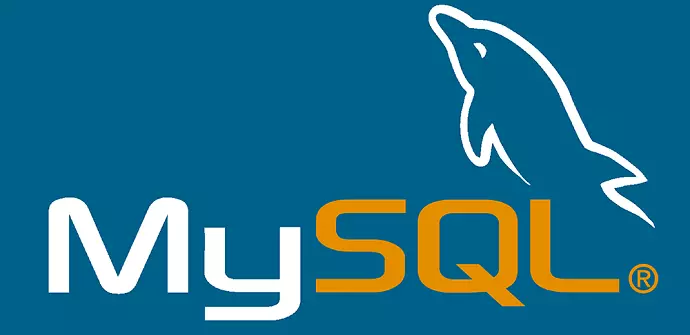

Estas son algunas bases de datos relacionales que es muy recomendable que aprendas a operarlas
MySQL
es un sistema de gestión de bases de datos relacional desarrollado bajo licencia dual: Licencia pública general/Licencia comercial por Oracle Corporation y está considerada como la base de datos de código abierto más popular del mundo
SQL Server
Microsoft SQL Server es un sistema de gestión de bases de datos relacionales (RDBMS) que admite una amplia variedad de aplicaciones de procesamiento de transacciones, inteligencia empresarial y análisis en entornos informáticos corporativos

Oracle
Oracle Database es un sistema de gestión de base de datos de tipo objeto-relacional, desarrollado por Oracle Corporation, la empresa estadounidense de hardware y software. Este tipo de sistema mejora la gestión de grandes bases de datos y también aumenta el nivel de seguridad.